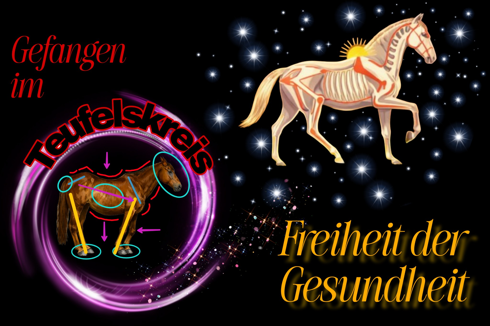

Warum überhaupt gesundheitsverbesserndes/gymnastizierendes Training machen?
Das kann man sehr einfach, aber eindrücklich, erklären. Ein Beispiel hierfür, in dem man sieht, wie zu wenig Rumpfmuskulatur Auswirkungen auf das gesamte Pferd in jeglichen Bereichen haben kann:
Das Gewicht des Rumpfes eines Pferdes macht etwa 50% bis 60% des Gesamtkörpergewichts aus. Das sind bei einem 600kg Pferd 300 bis 360kg. Allein die Eingeweide (mit Füllung – d. h. Futter, Wasser, etc.) machen 20-30% des Gesamtkörpergewichts aus, was bei einem 600kg Pferd 120 bis 180kg sind. Dieses Gewicht hängt/drückt durch die Schwerkraft nach unten. Da sich im Rumpfbereich keine Beine befinden, die das Gewicht tragen können, wird dieser schwere Rumpf alleine durch Muskelkraft getragen. (natürlich unterstützt durch die Wirbelsäule, Rippen und so weiter, aber es gibt keine bodenverbundene Stütze) Der Rumpf ist wie eine Hängebrücke zwischen Vorhand und Hinterhand aufgehängt. Wenn die Rücken- und Bauchmuskeln des Pferdes zu schwach sind, zum Beispiel weil sie zu wenig oft verwendet werden (kein Training in diese Richtung, kein Gelände und Untergrund, wo diese öfters gebraucht werden, etc.), können die Muskeln die Last des Rumpfes nicht mehr stemmen. Sie lassen also vermehrt den Rumpf hängen/fallen. Das bringt die Wirbelsäule in eine Hängebrücken-Position, wo sich die Dornfortsätze stärker annähern und die Gefahr für Kissing Spines erhöhen. Die Wirbelkörper und Bandscheiben werden einseitig belastet.
An der Wirbelsäule treten viele Nerven aus, die zu Organen, Muskeln und den dazugehörigen Hautarealen führen. Durch die einseitige Belastung der Wirbelsäule entstehen auch leicht Schmerzen (vor allem, wenn zusätzliches Gewicht auf den Pferderücken kommt), wodurch viele Pferde sich im Rücken „festhalten“, das heißt den Rücken durchgedrückt anspannen und verspannen. (Das machen auch viele Pferde, ohne Schmerzen zu haben, beispielsweise, weil sie nie gelernt haben, den Rücken ohne negative Anspannung unter dem Reiter zu halten) Über einen längeren Zeitraum können dadurch Blockaden an der Wirbelsäule entstehen, die vielerlei negative Auswirkungen haben können. Die Muskeln um die Blockade herum werden verspannt und das Bindegewebe verklebt. Nerven, die an der Stelle der Blockade austreten, können beeinträchtigt oder sogar gequetscht werden. Das kann dann Wahrnehmungsstörungen in den dazugehörigen Hautarealen zur Folge haben, die dazugehörigen Organe beeinträchtigen und/oder Muskelschmerzen, Zusammenziehen, oder sogar einen Funktionsausfall des dazugehörigen Muskels verursachen.
Des Weiteren können Blockaden an der Wirbelsäule auch den Stoffwechsel negativ beeinflussen und durch das Bindegewebe die Organschwingung (natürliche, wichtige Eigenbewegung der Organe) verändern, was sich wiederum schlecht auf deren Funktion auswirken kann. Das ursprünglich muskuläre Problem kann also auch zu weiteren Problemen im Organismus Pferd führen.
Aber nicht nur Nerven, Organe und Haut können beeinflusst werden, sondern auch die Statik und Belastung. Durch das „fallen lassen“ des Rumpfes, geht das Becken in Streckung, wodurch die Hinterhand wenig, bis kein Gewicht des Rumpfes tragen kann. Irgendwo muss das Gewicht ja gehalten werden, also übernimmt das die Vorhand. Diese muss also mehr Gewicht tragen und wird überlastet. Zusätzlich müssen die Vorderbeine aber auch weiter unter den Rumpf, um das Gleichgewicht zu halten, was eine Veränderung in der Statik bedeutet und alle Muskelketten nach oben beeinflusst. Die Gelenke werden alle schief/falsch/anders belastet, was zu Verschleißerscheinungen, Abnutzungen, Schmerzen und Ähnlichem führen kann.
Weiters werden durch die rückständige Stellung der Vorderbeine die Vorderhufe nun vermehrt im vorderen Bereich belastet, was zu Überbelastung und Hufproblemen führen kann. Durch die veränderte Belastung, werden nun alle Muskeln nach oben auch anders belastet und arbeiten nicht mehr auf die Art und Weise, für die sie gemacht sind. Als ob das nicht genug wäre: durch die veränderte Beinstellung funktioniert der sogenannte passive Stehapparat (ein komplexes System aus Muskeln, Sehnen und Bändern, das Gelenke in Streckung hält und Ermüdung verhindert) nicht mehr, der es dem Pferd erlaubt, im Stehen zu dösen und zu ruhen, ohne ständig Muskelkraft aufwenden zu müssen. (daher die Aussage „Pferde können im Stehen schlafen“) Da das nicht mehr einwandfrei funktioniert, müssen vor allem die Muskeln der Vorhand mehr arbeiten.
Es wird also deutlich, dass die Muskulatur der Vorhand aus mehreren Gründen überlastet wird. Dabei kommt es leicht dazu, dass die Muskeln in einen anaeroben Muskelstoffwechsel kommen, wo die Muskeln ohne ausreichend Sauerstoff arbeiten. Dabei kommt es zur Bildung von Laktat, was in größeren Mengen vom Körper nicht schnell genug abgebaut werden kann und sich im Muskel und im Blut ansammelt. Es kommt zu Muskelübersäuerungen und Muskelbrennen. Des Weiteren können Entzündungen und Überreizungen der Sehnen und Bänder entstehen und durch den veränderten Bewegungsablauf und möglichen Schmerzen oder Schäden können sich Lahmheiten aller Art – besonders Schulterlahmheiten – zeigen. Allgemein neigt die gesamte Vorhand sehr zu Verschleißerscheinungen und Krankheitsbildern aller Art.
Man sieht also, es entsteht ein Teufelskreis, in dem sich alle Aspekte immer weiter negativ beeinflussen – und das alles hat angefangen, wegen dem Fehlen an Muskulatur im Rumpfbereich. Um so einen Teufelskreis zu starten, braucht es gar kein schlechtes Ereignis, oder falsche, schädigende Trainingsmethoden – es reicht, einfach kein Training zu machen, um dies zu starten. Pferde können sich also im wahrsten Sinne des Wortes kaputtstehen. Gesundheitsschädigendes Training kann diesen Vorgang noch zusätzlich beschleunigen. Die Biomechanik der Pferde wird leider sehr oft nicht so sehr berücksichtigt oder verstanden. Dies ist aber der Schlüssel für gute gesunde Bewegung und Training – insbesondere, um Pferde aus schädigenden Bewegungsmustern rauszuholen.

Eine weitere Sache, die auch oft zu Problemen führt und Vielen unbekannt ist, ist die natürliche Schiefe und Vorhandlastigkeit des Pferdes, besonders in Kombination mit unseren Haltungssystemen und Trainingsformen. Pferde sind von Natur aus nicht dazu gemacht, in einem Haltungssystem mit statischen Fütterungen zu leben, enge Wendungen in hohen Gangarten in der Häufigkeit auszuführen, wie wir es oft im Bahntraining von ihnen verlangen, oder geritten zu werden.
Pferde haben von Fohlen an eine mehr oder weniger ausgeprägte Schiefe/Händigkeit und Vorhandlastigkeit, die sich aber in unseren Haltungs- und Trainingssystemen viel deutlicher und negativer auswirkt als in freier Wildbahn. Um Pferde langfristig gesund zu erhalten, müssen wir diese negativen Einflüsse stetig mit gutem gesundheitsförderndem Training ausgleichen.

Viele denken, dass Training nur notwendig wäre, wenn man reitet. Abgesehen vom oben genannten Kaputtstehen, kann auch beispielsweise alleine die Haltungsform (zb statisches Fressen) eine negative Auswirkung auf die Gesundheit des Pferdes haben. Durch die natürliche Schiefe der Pferde belasten sie vorzugsweise eine Seite mehr als die andere. Hinzu kommt die Vorhandlastigkeit der Pferde. Ein Vorderbein wird also überbelastet. Das führt zu einseitigen, schiefen Gelenksbelastungen (hohe Gefahr für Verschleißerscheinungen), ungleicher Muskulaturausbildung und so weiter. Die Pferde sind häufig verspannt bzw. auf einer Seite in der Muskulatur verkürzt und die Muskeln arbeiten in unphysiologischen Verhältnissen - oft unter Daueranspannung und zu wenig (Sauerstoff-)Versorgung. Das erzeugt nebenbei – wie oben beschrieben - Schadstoffe im Körper.
Beim statischen Fressen, so wie es in unseren Haltungsformen eigentlich immer zu sehen ist, belasten die Pferde immer ein Vorderbein mehr – genau das, das auch sonst immer am meisten belastet wird durch ihre Schiefe und Vorhandlastigkeit: ihr Standbein. Pferde verbringen viele Stunden mit Fressen. Hier wird immer dasselbe Vorderbein belastet. Wildpferde hingegen bewegen sich immer in langsamen Schritten vorwärts, wenn sie grasen. Sie haben keine Heuraufen oder Ähnliches, sondern weite Flächen, wo sie abwechselnd ein Bein vor das andere setzen, um zu mehr Gras zu kommen: eine abwechselnde Belastung der Beine.
Auch wenn man noch nie von der Schiefe der Pferde gehört hat, beim Reiten hat man sie sicher schon mal bemerkt. Die meisten Pferde haben eine Lieblingsseite – eine Seite, wo sie sich zB im Galopp leichter tun. Viele Pferde setzen ihren Reiter auch immer wieder schief hin – sie „schupfen“ ihn immer auf ihre stärkere Körperhälfte.
Wenn man sich der Schiefe der Pferde nicht bewusst ist, und bei der Ausführung von Lektionen nicht darauf achtet, dass das Pferd sie gesund ausführt, gibt es viel Alltägliches im Training, was die Schiefe der Pferde zusätzlich verstärkt, und damit schädliche Bewegungsmuster fördert.
Das mag jetzt vielleicht sehr betrübend klingen, wenn man denkt, man müsse jetzt ein Leben lang daran arbeiten, diese schädlichen Bewegungsmuster, die die Pferde von Geburt an mitbringen, zu korrigieren. Aber das kann ganz anders aussehen. Man macht ja schließlich sowieso regelmäßig was mit seinem Pferd. Anstelle von „sinnlosen“ Übungen kann man jedes Mal mit seinem Pferd etwas machen, das es körperlich und geistig verbessert. Die Koordination, Geschicklichkeit, Körperwahrnehmung (und damit sinkt auch das Verletzungsrisiko), Balance, Beweglichkeit, Kondition, Beidhändigkeit und Gehirnhälftenvernetzung (und damit besseres und schnelleres Lernen) steigt und hat positive Auswirkungen auf eine Vielzahl an Prozessen im Körper, die die Gesundheit des Pferdes verbessern.